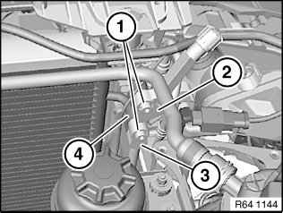
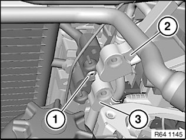
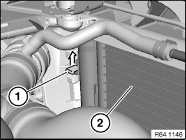
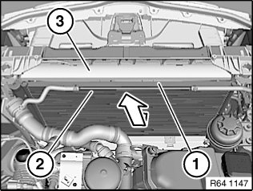

<!DOCTYPE html>
<html>
  <head>
    <title>Condenser HVAC: Service and Repair — 2011 BMW 128i Coupe (E82) L6-3.0L (N52K) Service Manual | Operation CHARM</title>
    <meta name='description' content="Detailed repair manual for the 2011 BMW 128i Coupe (E82) L6-3.0L (N52K).">
    <link rel='stylesheet' href="../style.css">
    <meta name='viewport' content='width=device-width, initial-scale=1.0' />
  </head>
  <body>
    <div class='theme-colors header'>
      <div class='branding'><b>Operation CHARM</b>: Car repair manuals for everyone.</div>
<div class=breadcrumbs><a class='breadcrumb-part' href="../">Home</a> <b>&gt;&gt;</b> <a class='breadcrumb-part' href="../BMW/">BMW</a> <b>&gt;&gt;</b> <a class='breadcrumb-part' href="../BMW/2011/">2011</a> <b>&gt;&gt;</b> <a class='breadcrumb-part' href="../index.html">128i Coupe (E82) L6-3.0L (N52K)</a> <b>&gt;&gt;</b> <a class='breadcrumb-part' href="0.html">Repair and Diagnosis</a> <b>&gt;&gt;</b> <a class='breadcrumb-part' href="0.html#Heating%20and%20Air%20Conditioning/">Heating and Air Conditioning</a> <b>&gt;&gt;</b> <a class='breadcrumb-part' href="1975.html">Condenser HVAC</a> <b>&gt;&gt;</b> <a class='breadcrumb-part' href="9383.html">Service and Repair</a></div></div>
<div class="theme-colors floaty-message lemon-message">
  <b style="font-size: 1.5em; color: gold">Manuals through 2025 now available!</b>
  <br><br>
  Our trusted friends have launched a new website named LEMON, which has newer manuals. It also contains all the CHARM manuals.
  <br><br>
  LEMON is the spiritual successor to  CHARM, I recommend you try it!
  <br><br>
  Link: <a style='white-space: nowrap' href="../missing-page">lemon-manuals.la</a> or <a style='white-space: nowrap' href="../missing-page">lemon-manuals.org.ua</a>
  <br><br>
  (Some people have issue connecting. LEMON is investigating. For now, use Firefox or change your DNS server)
  <br><br>
  Or, hide this message: <a href="../missing-page">temporarily</a> or <a href="../missing-page">permanently</a>
</div>
<div class='main'>
<h1>Condenser HVAC: Service and Repair</h1><br><br><b>64 53 551 Removing And Installing Or Replacing Capacitor For <a href="0.html#Heating%20and%20Air%20Conditioning/">Heating And Air Conditioning</a> System</b><br><br><b>Special tools required:</b><br><br><br><div class='oxe-image'></div><br><br><br><br><br><b>WARNING:</b><br>Danger of injury.<br><a href="141.html">Refrigerant</a> circuit is under high pressure.<br>Follow safety information for handling R 134a tetrafluorethane <a href="141.html">refrigerant</a>.<br>Avoid contact with <a href="141.html">refrigerant</a> and refrigerant fluid.<br>Follow safety information for handling <a href="141.html">refrigerant</a> fluid.<br><br><br><div class='oxe-image'></div><br><br><br><br><br><b>IMPORTANT:</b><br>Risk of damage.<br>Restart engine only when <a href="0.html#Heating%20and%20Air%20Conditioning/">heating and air conditioning</a> system has been correctly filled.<br>Follow instructions for opening and replacing parts in <a href="141.html">refrigerant</a> circuit.<br>If Air conditioning system is opened for more than 24 hours:<br><br><br><div class='oxe-image'></div><br><br><br><br><br><b>NOTE:</b><br>Follow notes for opening and replacing parts in <a href="141.html">refrigerant</a> circuit.<br>If Air conditioning system is opened for more than 24 hours:<br>Replace desiccant insert for <a href="0.html#Heating%20and%20Air%20Conditioning/">heating and air conditioning</a> system<br><br><b>IMPORTANT:</b><br>The desiccant insert can only be replaced in vehicles up to 12/08.<br>In vehicles after 12/08, the air conditioning capacitor must be replaced.<br><br><br><div class='oxe-image'></div><br><br><br><br><br><b>Necessary preliminary work:</b><br><span class='indent-2'>&#09;</span>-<span class='indent-5'>&#09;</span>Drawing off, evacuating and filling the <a href="0.html#Heating%20and%20Air%20Conditioning/">heating and air conditioning</a> system are not included in the time value given for this job item<br><span class='indent-2'>&#09;</span>-<span class='indent-5'>&#09;</span>Remove radiator<br><br><br><div class='oxe-image'></div><br><br><br><br><br>Release screws (1).<br>Tightening torque 64 53 6AZ.<br>Detach refrigerant lines (2) and (3) towards rear from <a href="0.html#Heating%20and%20Air%20Conditioning/">heating and air conditioning</a> system capacitor (4).<br><br><b>Installation note:</b><br>Replace sealing rings.<br>Use special tool 00 9 030 to install sealing rings without damaging them.<br><br><br><div class='oxe-image'></div><br><br><br><br><br>Release screw (1).<br>If necessary, lay refrigerant lines (2) and (3) slightly to one side.<br><br><br><div class='oxe-image'></div><br><br><br><br><br>Unlock retaining tab (1) in direction of arrow and pull <a href="0.html#Heating%20and%20Air%20Conditioning/">heating and air conditioning</a><br>system capacitor (2) towards rear slightly.<br><br><br><div class='oxe-image'></div><br><br><br><br><br>Feed out <a href="0.html#Heating%20and%20Air%20Conditioning/">heating and air conditioning</a> system capacitor (1) upwards between tank ventilation line (2) and cover (3).<br><br><br><div class='oxe-image'></div><br><br><br><br><br><b>After installation:</b><br><span class='indent-2'>&#09;</span>-<span class='indent-5'>&#09;</span>Evacuate and fill <a href="0.html#Heating%20and%20Air%20Conditioning/">heating and air conditioning</a> system<br><span class='indent-2'>&#09;</span>-<span class='indent-5'>&#09;</span>Fill and vent cooling system and check for leaks<br><br><br><h3>m|:</h3><div class='oxe-image'></div><br><br><br></div>
<div class="theme-colors footer">
  <i>pro multis</i> · <a href="../about.html">About Operation CHARM</a>
</div>
<script src="../script.js"></script>
</body>
</html>
